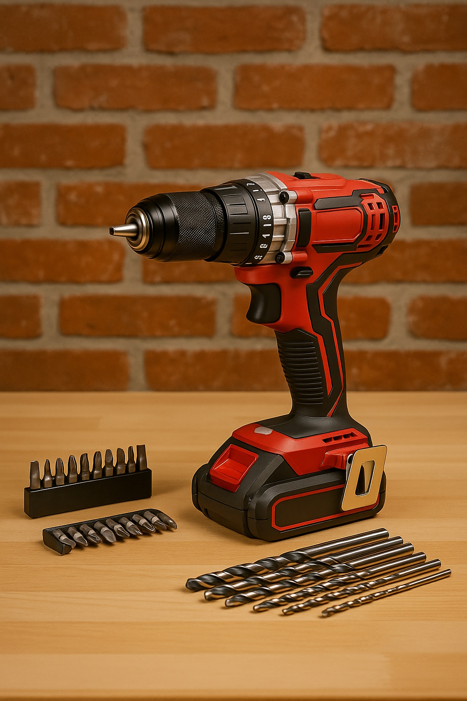
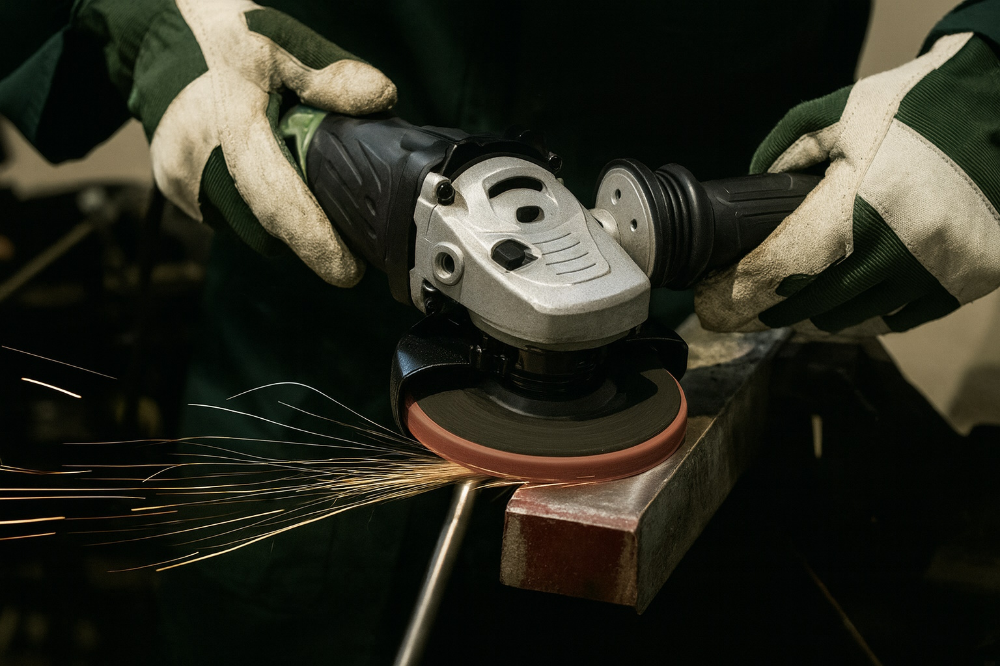

Akku-Werkzeuge für Haus und Garten: Welche Maschinen braucht man wirklich?
Die Auswahl an Akku-Werkzeugen ist riesig: Bohrschrauber, Schlagschrauber, Multitool, Stichsäge, Winkelschleifer, Gartengeräte – und jede Marke hat ihr eigenes System. Viele Heimwerker fragen sich: Was brauche ich wirklich für Haus, Wohnung und Garten? Hier ein praxisnaher Überblick aus Sicht eines Handwerkers.

1. Ein Akkusystem wählen – statt zehn verschiedene Ladegeräte
Der wichtigste Schritt kommt vor dem ersten Werkzeug: ein System wählen. In der Praxis hat es sich bewährt, bei einer Marke und einer Voltklasse zu bleiben:
- 12V-System: kompakt, leicht, ideal für Wohnung, Möbelmontage, leichtere Arbeiten.
- 18V-System: Standard im Handwerk, genug Leistung für Holzbau, Metall und Garten.
- 36V/40V-Systeme: meist für schwere Gartengeräte wie Kettensägen oder Rasenmäher.
Wer von Anfang an auf ein gutes 18V-System setzt, kann später viele Maschinen mit denselben Akkus betreiben.
2. Die Basis: Akkuschrauber / Bohrschrauber
Das Werkzeug, das wirklich in keinem Haushalt fehlen sollte, ist ein Akku-Bohrschrauber. Damit lassen sich:
- Regale montieren, Möbel aufbauen
- Löcher in Holz und Mauerwerk (mit Schlagfunktion) bohren
- Schrauben in Metall- und Holzprofile setzen
Tipp aus der Praxis: Zwei Akkus sind Pflicht – einer im Einsatz, einer am Ladegerät.
3. Sägen: Stichsäge, Handkreissäge oder Multisäge?
Für viele Projekte im Haus- und Gartenbereich braucht man eine Säge:
- Stichsäge: flexibel, ideal für Auschnitte, Rundungen und dünne Platten.
- Handkreissäge: für gerade Schnitte in Brettern, OSB und Plattenmaterial.
- Multisäge / Säbelsäge: sehr praktisch für Abrissarbeiten und grobe Zuschnitte.
Wer nur gelegentlich baut, kommt mit einer guten Stichsäge oft sehr weit. Beim Bau von Terrassen oder Gartenhäusern ist eine Handkreissäge fast unverzichtbar.
4. Winkelschleifer – nicht nur für Profis
Ein kleiner Akku-Winkelschleifer (115–125 mm) ist vielseitig einsetzbar:
- Trennen und Entgraten von Metallprofilen
- Zuschneiden von Fliesen oder Steinen (mit der richtigen Scheibe)
- Reparaturen an Geländern, Zäunen oder Stahlkonstruktionen
Wichtig: Schutzbrille und Gehörschutz gehören immer dazu – gerade bei Heimwerkern wird das gerne vergessen.
5. Nützliche Ergänzungen für Haus und Garten
Je nach Projekt machen weitere Maschinen Sinn:
- Multitool: zum bündigen Kürzen, Schleifen in Ecken, kleine Ausschnitte.
- Akku-Lampe: oft unterschätzt, aber sehr hilfreich auf der Baustelle.
- Gartengeräte: Rasentrimmer, Heckenschere oder Laubbläser im gleichen System.
So wächst die Ausstattung nach und nach, ohne dass man neue Akkusysteme aufbauen muss.
6. Wie viele Akkus und Ladegeräte braucht man?
Für typische Haus- und Gartenprojekte empfehlen wir:
- mindestens 2 Akkus bei einem 18V-System
- bei mehreren Maschinen und regelmässiger Nutzung: 3–4 Akkus
- ein Schnellladegerät, das in 30–60 Minuten lädt
Wer Garten, Garage und kleine Bauprojekte abdeckt, ist mit einem soliden Set aus Bohrschrauber, Säge, Winkelschleifer und 2–3 Akkus gut aufgestellt.
7. Fazit: Lieber ein System konsequent ausbauen
Statt viele einzelne Akku-Werkzeuge von verschiedenen Marken zu sammeln, lohnt es sich, ein gutes System zu wählen und dieses Schritt für Schritt zu erweitern. So passen Akkus, Ladegeräte und Koffer zusammen – und man arbeitet auf Dauer schneller, sicherer und entspannter.